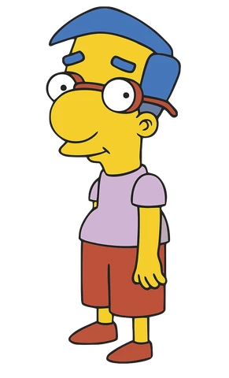

Sobre mim
Romeu Bernardes, 17 anos de idade, morando em Curitiba.
Interesses:
- Desenvolvimento Back-End;
- Filosofia e política;
- Video Jogos;
- Música, especialmente Jazz e samba.
Educação:
- 2 anos de TecPuc no curso de técnico em informática;
- Formado no SESI SENAI em Técnico em Desenvolvimento de Sistemas.
